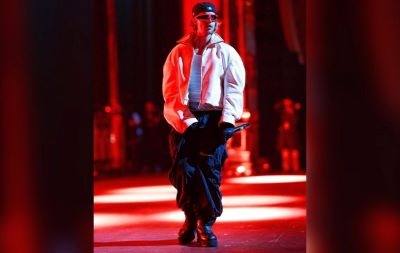

News
Justin Bieber volvió a los escenarios tras el nacimiento de su hijo.
El canadiense hizo una interpretación sorpresa en el concierto del rapero Don Toliver en Los Ángeles. Estuvo acompañado de su esposa Hailey.
En un destacado evento musical, Justin Bieber realizó una aparición sorpresa en el concierto del rapero Don Toliver en el Crypto Arena de Los Ángeles el sábado. Este regreso a los escenarios se produjo casi dos meses después del nacimiento de su primer hijo, Jack Blues Bieber, el pasado 23 de agosto.
El canadiense de 30 años apareció en el escenario con un look casual, usando un gorro blanco, una sudadera negra y gafas oscuras. En un video compartido por Harvey, se puede ver a Justin actuando mientras se movía al ritmo de la música, sosteniendo un micrófono en el aire y recibiendo el cariño de la audiencia.
En un video compartido por Harvey, se puede apreciar la energía contagiosa de Justin mientras se movía al ritmo de la música, sosteniendo el micrófono en el aire y recibiendo el cálido cariño de la audiencia. La conexión entre el artista y sus fans fue palpable, creando un ambiente electrizante que recordó a todos la magnitud de su talento y la emoción de su regreso. Además, esta aparición se da en un contexto donde Bieber ha estado lidiando con cuestiones de salud y ha tomado un tiempo fuera de los escenarios para cuidar de su bienestar y de su familia.
Este evento no solo marcó un hito en la carrera de Justin, sino que también reforzó su estatus como uno de los artistas más influyentes de su generación, capaz de sorprender y emocionar a su público en cualquier momento. La combinación de su regreso, la reciente paternidad y la calidez del público hicieron de esta actuación una noche inolvidable para todos los presentes.
Justin Bieber con su hijo, Jack Blues Bieber.
